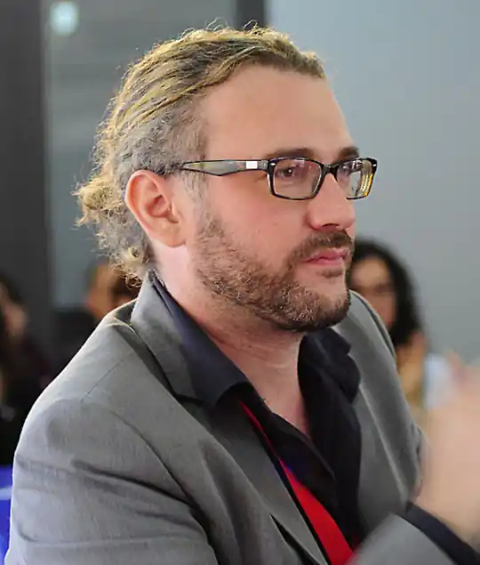

Маріо Паскуалотто, відомий також під псевдонімом Сер Стів Стівенсон — італійський дитячий письменник, відомий за циклами творів "Школа піратів" та "Агата Містері".
Маріо Паскуалотто народився в місті Новеллара. За освітою він є психолінгвістом. Тривалий час Паскуалотто працював на компанії з розробки рольових ігор в Італії та Англії. Пізніше Маріо Паскуалотто став співробітником факультету комунікації Болонського університету.
Маріо, перш ніж стати професійним письменником, досліджував психологію мови і мислення, методики творчого навчання. Працював редактором, перекладачем та автором ігрових журналів у Італії та Англії. Дебютував твором "Літо молі" (2011). Серія про юного детектива Агату була започаткована 2013 року виданням "Загадка фараона" і станом на 2017 нараховувала майже три десятки найменувань. Книги Паскуалотто написані для молодших читачів, але вони також — чудова допомога для дорослих, що вивчають італійську мову. Читацька аудиторія охоплює 22 країни світу і продовжує розширюватись. Творчий доробок: "На абордаж", "Грізний пірат на прізвисько Вогненна Борода" (2011), "Бенгальська перлина", "Меч короля Шотландії", "Крадіжка на Ніагарському водоспаді" (2013), "Бермудський скарб" (2014), "Детективне Різдво" (2015). Книги серії "Агата Містері" перекладено українською.